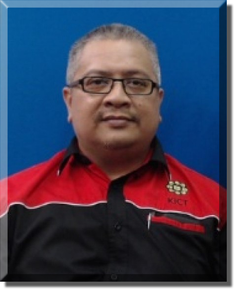

Principal’s Message
السلام عليكم ورحمة الله وبركاته
بسم الله الرحمن الرحيم
Welcome to the website of Mahallah Salahuddin Al Ayubi
This website is dedicated to those who want to learn about Mahallah Salahuddin al-Ayyubi (MSA). As a mahallah for students under uniform bodies, MSA is also known as the ‘Land of Warriors.’ As the Principal, it is a great honor for me to lead and manage these warrior students in terms of their welfare, discipline, and programs. My vision as the Principal for MSA is to extend the spirit of Muslim brotherhood and the esprit de corps of Salahuddins among the residents.
There are eight blocks for undergraduate students: four for males (C, D, E, F) and four for females (G, H, I, J). An additional block for Post Graduate students provides accommodations, totaling nine blocks for the residents. Each male block represents different types of uniform bodies; Block C is for Army cadets, D is for male Non-Uniform Bodies students and SISPA trainees, E is for Airforce cadets, and F is for SUKSIS cadets. For female blocks, G is for Army cadets, H is for Airforce cadets, I is for SUKSIS, and J is for SISPA trainees and female Non-Uniform Bodies.
